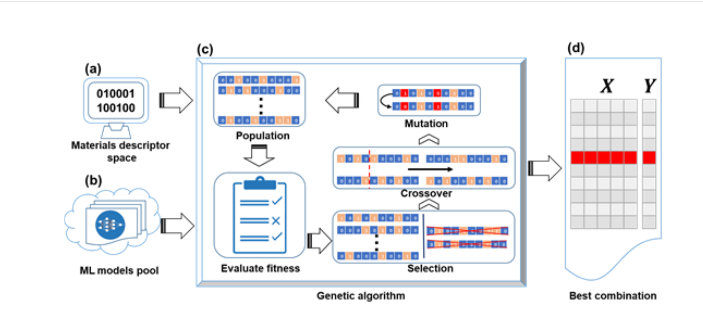

基于遗传算法的对材料描述符和机器学习模型组合筛选框架
从大量组合寻优空间中快速选择机器学习模型和材料描述符的普适算法

问题的提出
核心挑战
材料信息学利用机器学习模型来映射目标属性和各种材料描述符之间的关系以加速新材料的发现。然而，对于某一材料问题，其潜在的机器学习模型和材料描述符数量众多，特别是其组合，这在很大程度上阻碍了材料信息学的应用。
举例说明：对某一材料问题，有30个可能与目标性能有关的材料描述符，5个不同的机器学习模型，组合的寻优空间就有53亿。
因此，对于特定的材料问题，需要一个可以快速协同筛选最适合的ML模型和材料描述符组合的方法。在本研究中，我们提出了一个利用遗传算法从大量组合寻优空间中快速选择机器学习模型和材料描述符的普适算法，并证明了它对高熵合金相形成问题的有效性。
框架介绍
确定材料问题
高熵合金相分类问题
- 分类一：固溶体合金（SS）和非固溶体合金（NSS）——二分类问题
- 分类二：单一体心立方（BCC）相，单一面心立方（FCC）相，以及FCC和BCC双相（DP）——三分类问题
建立材料描述符空间和机器学习模型池
材料描述符
46个
机器学习模型
9个分类器
经过Pearson相关系数筛选后有46个材料描述符；对此分类问题我们共采用了九个不同的机器学习模型（分类器）。
基于遗传算法对材料描述符和机器学习模型组合筛选
编码方式：每个材料描述符都使用1或0的整数编码，表示是否选择该描述符。因此，整个材料描述符集由0和1的二进制字符串描述。如图所示，遗传算法随机生成一定数量的材料描述符的初始子集。
适应度函数：定义为分类准确性。利用已有数据集，训练基于种群中每个个体代表的描述符子集机器学习模型，默认计算50次留出10%作为测试集得到的分类准确率的平均值为该个体的适应度值。
遗传操作：根据这些初始子集的适应度函数的值，对这些二进制数字进行选择、交叉和变异的三个遗传算法操作会生成新的材料描述符子集，作为新一代。
迭代过程：新一代将用作初始子集，并重复执行循环，直到满足循环的停止条件为止。对某一模型，给出最优特征子集。
多次运行：由于初始种群生成的随机性，可能每次GA给出的特征子集并不相同，为此，我们多次运行GA过程，并将得到的适应度值最大的特征子集作为最终选择的特征子集。
最终目标：这样，可以实现机器学习模型和材料描述符的组合优化。
模型简介
该框架通过遗传算法的高效搜索能力，从巨大的组合空间中快速找到最优的机器学习模型和材料描述符组合。框架的核心优势在于：
- 高效性：遗传算法能够在有限的迭代次数内找到接近最优的解
- 普适性：可应用于各种材料设计问题，不局限于特定类型
- 协同优化：同时优化特征选择和模型选择，而非分步优化
- 可扩展性：可轻松添加新的描述符或模型到搜索空间中